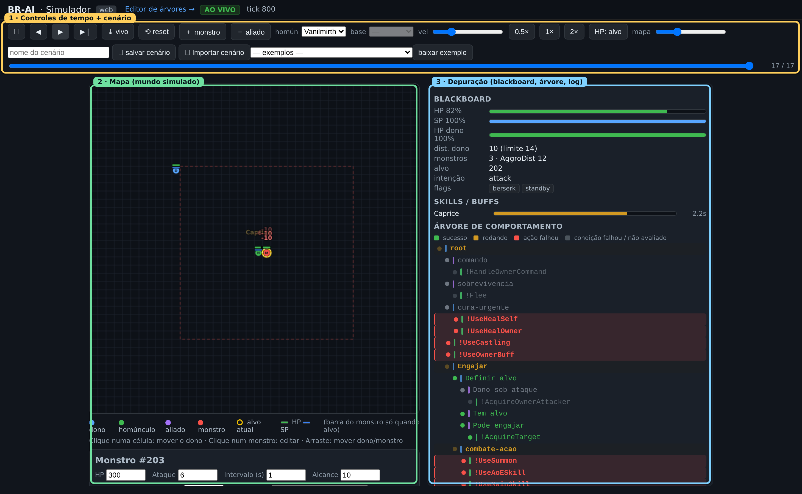
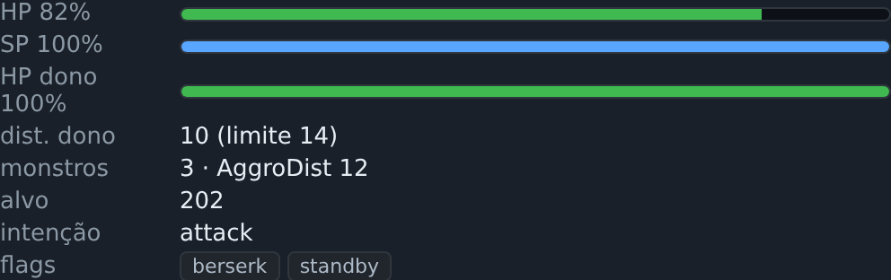
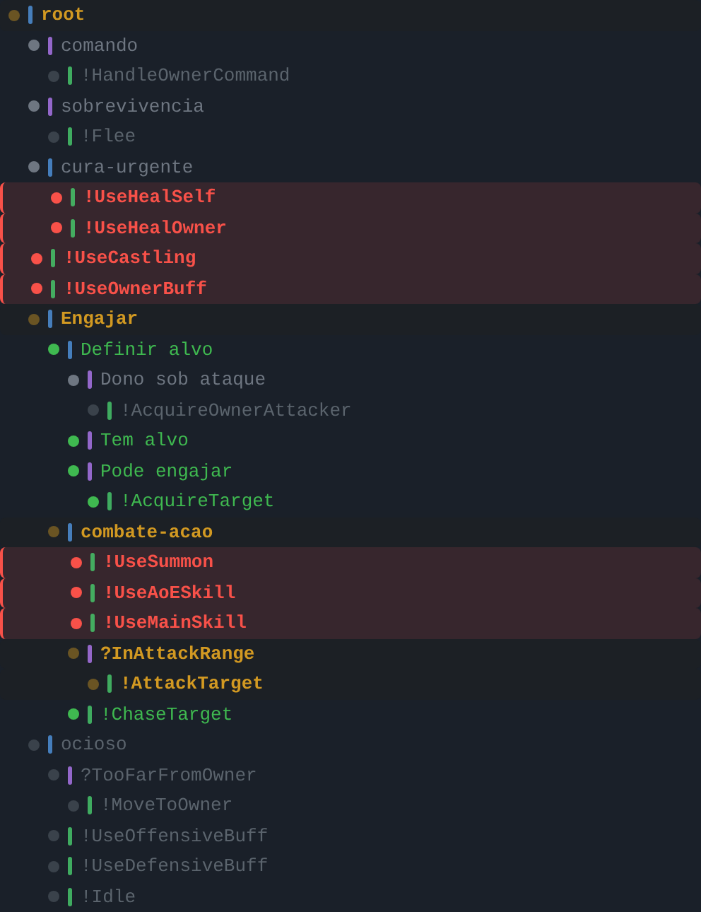

Guia do Simulador / Depurador
O simulador roda a mesma árvore que rodaria no cliente do RO, mas contra um mundo de mentira desenhado por você. Você vê o homúnculo seguir, perseguir e atacar num mapa, controla o tempo (passo a passo, replay) e acompanha a árvore colorida ao vivo — cada nó pintado pelo status que teve naquele tick. É a ferramenta mais útil do projeto: transforma “por que o homún travou?” numa inspeção visual de segundos.
A tela
A tela tem o mapa (um grid de 40×40 células), os controles de tempo e os painéis de depuração: blackboard, árvore ao vivo, skills/buffs e log.

Controle de tempo (transporte)
| Botão | Atalho | O que faz |
|---|---|---|
| ⏮ | Home | Volta ao primeiro frame gravado. |
| ◀ | ← | Volta 1 frame. |
| ▶ / ⏸ | Espaço | Play / pause. |
| ▶❘ | → | Avança 1 frame. |
| ⤓ vivo | End | Salta para o frame “ao vivo” (presente). |
| ⟲ reset | — | Reinicia o cenário. |
Há ainda um controle de velocidade (slider de FPS, com atalhos 0,5× / 1× / 2×) e a timeline, uma barra frame atual / total que você pode arrastar para revisitar qualquer tick passado — inclusive o estado da árvore daquele tick. O slider mapa ajusta o tamanho do mapa na tela.
O simulador grava o histórico por tick. No presente, você está AO VIVO e cada passo avança a simulação de verdade. Ao voltar no tempo, entra em REPLAY: reproduz frames gravados; ao alcançar o presente, volta a avançar ao vivo. Um selo indica o modo. No passado, clicar no mapa traz você de volta ao vivo.
Interagir com o mapa
Cada entidade aparece como um marcador circular rotulado, com barras de HP/SP: D (dono), H (homúnculo), A (aliado), M (monstro).
- Clique numa célula vazia — move o dono para lá (veja o homúnculo seguir).
- Clique num monstro — comanda o homúnculo a atacá-lo.
- Clique numa entidade — seleciona para editar no painel (HP/SP, ataque, agressividade, posição).
- Arraste uma entidade — reposiciona em tempo real.
Montar o cenário
Você pinta o mundo: ＋ monstro e ＋ aliado adicionam entidades (aliados ajudam a testar a proteção anti-KS). Clique numa entidade para editar HP, ataque, intervalo de ataque, se é agressiva e — no monstro — a classe/ID (usada pelos nós monsterCheck). O relógio do mundo é determinístico (avança por um passo fixo por frame), o que torna os testes reproduzíveis — essencial para depurar cooldowns e timeouts.
Barras e indicadores
Cada entidade mostra barras: HP (verde › amarelo › vermelho conforme a porcentagem) e, abaixo, SP (azul). Dono, homúnculo e aliados exibem as barras sempre; monstros só quando são o alvo atual do homúnculo (ou quando você os clica) — assim o mapa não fica poluído. O botão HP: alvo/todos alterna mostrar o HP de todos os monstros.
Outros indicadores no mapa:
- Anel amarelo — o alvo atual do homúnculo. Anel branco tracejado — a entidade selecionada.
- Linha vermelha sólida — ataque/skill em andamento, do atacante ao alvo.
- Linha vermelha pontilhada — ameaça: um monstro mirando no homúnculo, no dono ou num aliado.
- Linha azul tracejada — a intenção de movimento do homúnculo no tick.
- Quadrado pontilhado — o alcance de aggro do monstro selecionado.
Passe o mouse sobre qualquer ator para abrir um tooltip com seus dados (id, tipo, HP/SP, e — no monstro — a classe com o nome do cadastro e o estado agressivo/passivo/provocado). O tooltip atualiza em tempo real enquanto a simulação roda.
Efeitos de skill (dados Renewal)
As skills aplicam efeitos representativos baseados nos dados Renewal (ratemyserver), não um dano genérico. O homúnculo tem ATK e MATK editáveis (clique nele): skills físicas escalam por ATK e mágicas por MATK. Os efeitos modelados:
- Dano direto — % do ATK/MATK por nível, em alvo único ou área.
- Dano fixo — combos grappler da Eleanor.
- % do HP máximo — Self Destruction.
- Dano por segundo (DoT) — Lava Slide, Blast Forge e Poison Mist criam uma área no chão que causa dano a cada intervalo; você vê o HP do monstro caindo a cada tick.
- Cura — por % do HP do alvo (Healing Hands, Chaotic, Silent Breeze).
- Status/debuff — paralisia, atordoamento, cinzas, etc., marcados no monstro.
Não são os números exatos do servidor, mas reproduzem o caráter de cada skill — burst vs. dano contínuo, cura, status. Os mesmos dados aparecem no editor por nível.
Inspetor de blackboard
Mostra, ao vivo, o que a árvore “enxerga” naquele tick: self (HP%/SP%), owner (distância, HP%), monsters (quantos à vista), config (AggroDist, AggroHP, FleeHP, etc.), flags (berserk/standby), intent (a intenção emitida, ex.: “move · chase”) e target (id do alvo, 0 = nenhum).

Painel da árvore ao vivo
A árvore inteira é renderizada como uma lista indentada, e cada nó é colorido pelo status do tick exibido:
- verde — SUCCESS (cumpriu o objetivo).
- amarelo — RUNNING (ação em andamento, em destaque).
- fundo vermelho — uma ação que falhou.
- cinza — FAILURE de condição ou nó não avaliado naquele tick.

Isso mostra de imediato qual ramo a raiz escolheu e por quê. Combinado com a timeline, você “rebobina” até o tick onde o comportamento divergiu e vê exatamente qual condição falhou.
Como o simulador é um espelho do jogo e os nós desativados não vão para os arquivos Lua, eles também não aparecem na árvore ao vivo. Se você desativou um ramo no editor e não o vê no simulador, é o esperado. Para vê-lo de novo, reative-o no editor (botão Ativar ou tecla D) e clique ▶ Simular outra vez.
Skills, buffs e log
O painel Skills / Buffs lista os cooldowns em andamento, os buffs ativos e os efeitos de área ainda no chão, cada um com uma barra de tempo restante — útil para confirmar recasts e janelas de recarga. O painel Log mostra as chamadas de TraceAI da árvore no formato [tick] mensagem, com as linhas de falha destacadas. Como tudo é gravado por frame, o log acompanha o replay.
Salvar e carregar cenários
Um cenário é um mundo completo (mapa, entidades, config, tipo de homúnculo). Na versão estática, salvar baixa um arquivo e carregar/importar envia um arquivo:
- 💾 salvar cenário — captura o estado ao vivo atual e baixa um
.json. - 📤 Importar cenário — envia um
.jsone o carrega no mapa. - — carregar exemplo — — selecione um cenário de exemplo no seletor e ele é carregado na hora.
- baixar exemplo — baixa o arquivo
.jsondo exemplo selecionado, caso queira guardá-lo.
Cenários são seus casos de regressão: todo bug reproduzido vira um cenário salvo, que você reabre para confirmar a correção. Detalhes do modelo carregar/salvar: Primeiros passos.
Vindo do editor
No editor, ▶ Simular envia a árvore atual (com o contexto de tipo/base) ao simulador e abre esta tela — sem exportar arquivo manualmente. É o laço de iteração mais rápido: edite → simule → ajuste.
O que o simulador modela (e o que não)
Modela bem: a lógica da árvore e da decisão, com alta fidelidade — movimento célula a célula, alcance, aggro, HP/SP, skills resolvidas pelos mesmos metadados do jogo, tempo determinístico.
Não substitui o jogo: comportamentos que dependem de quirks do servidor real (lag de posição, timing fino de cast, detecção heurística de fim de skill) ainda exigem validação final no cliente. O simulador reduz, mas não elimina, esse passo — e cada divergência encontrada no jogo deve virar um cenário de regressão.